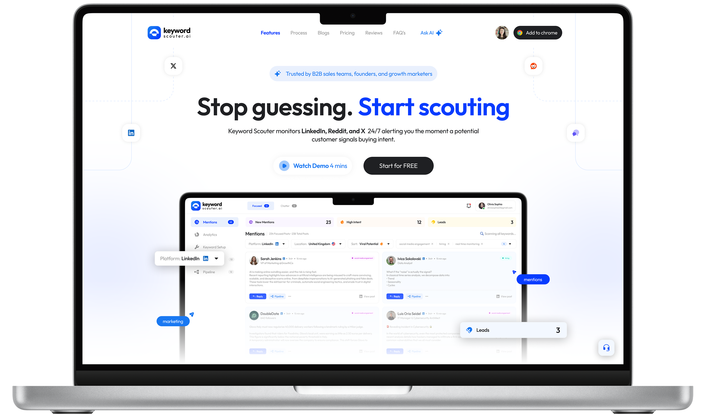
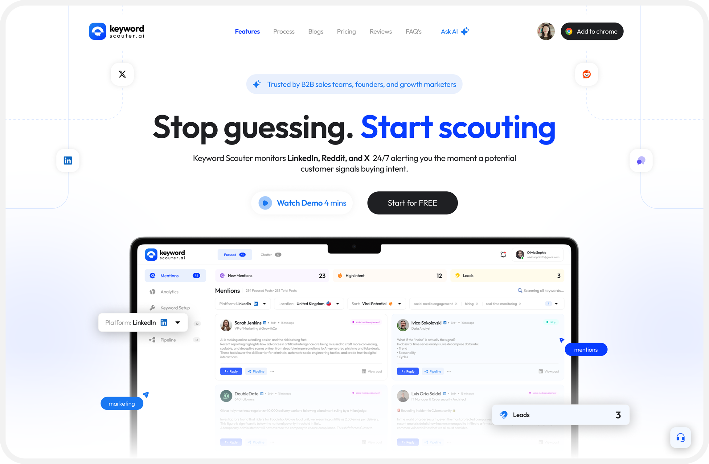
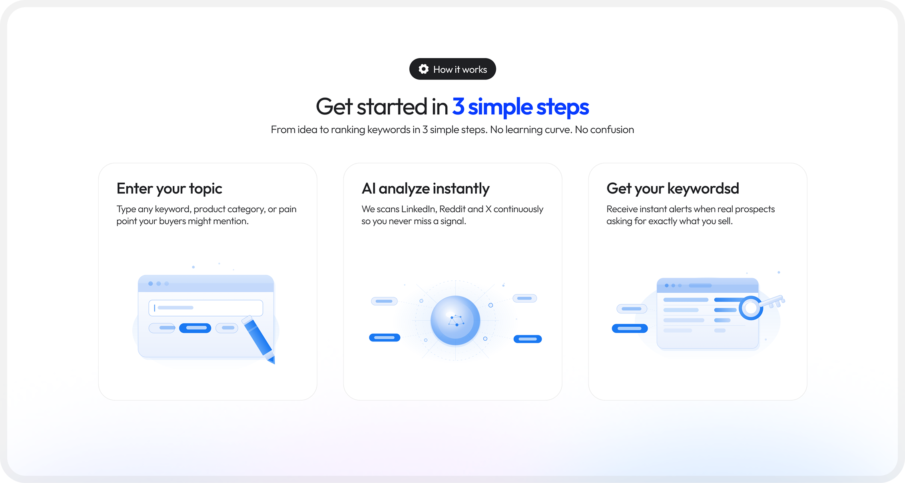
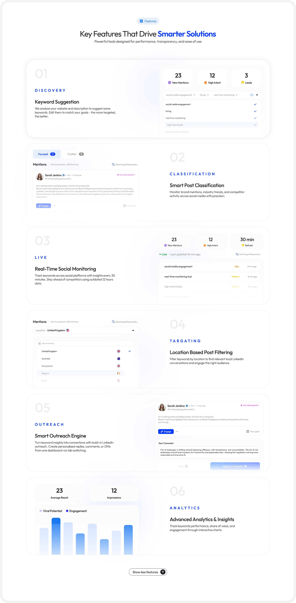
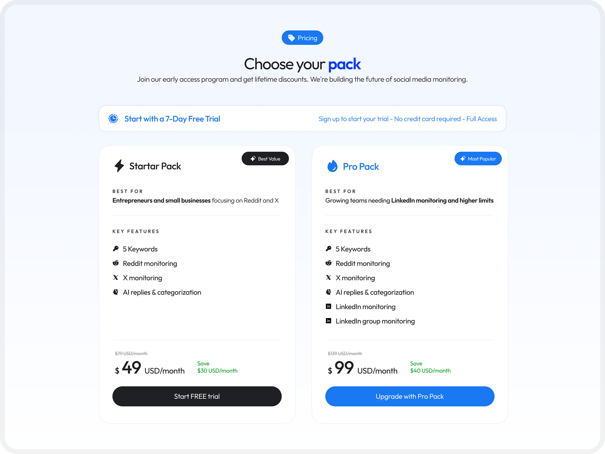
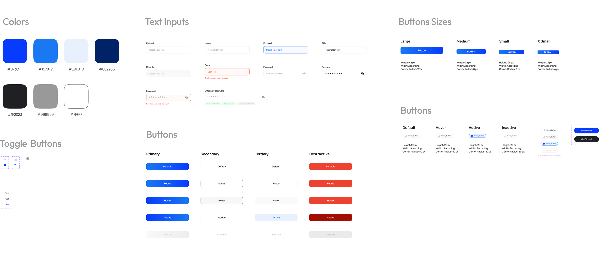

Keywordscouter.ai Redesign
Transforming a keyword research SaaS from information-dense to conversion-focused. Cleaner hierarchy, smarter flows, and a brand identity that signals trust.

What is Keywordscouter.ai?
Keyword Scouter helps teams find high-intent conversations across LinkedIn, Reddit, and X.
The product itself solves a very clear problem: helping people discover valuable conversations and act on them quickly. The website, however, had the right information without the strongest storytelling. My goal was to redesign the landing page so the value felt immediate, visible, and easier to trust.
The product's core promise is powerful: stop guessing, start scouting. The challenge? The original website didn't live up to that promise visually or experientially — leading to a conversion gap between a capable product and a landing page that didn't reflect it.
A product worth using, a website holding it back
The original site communicated the right features but lost users in the translation. Visual noise, unclear hierarchy, and a landing page that felt generic compared to the product's actual capability created a drop-off before users ever reached the CTA.
Before — Pain Points
- Hero section lacked a clear, singular CTA
- Feature sections were dense and hard to scan
- Visual language felt inconsistent across sections
- Pricing lacked hierarchy — both plans felt equal
- Social proof section underused, low visual impact
- FAQ section buried important conversion moments
- Typography felt generic — no distinctive personality
- No strategic use of contrast or visual weight
After — Design Decisions
- Hero anchored by bold headline + single clear CTA
- Feature cards use numbered sections with clear rhythm
- Cohesive soft indigo palette used with purpose
- Pricing redesigned to spotlight Pro as recommended
- Testimonials elevated with photos and named attribution
- FAQ integrated into scannable accordion layout
- Modern display pairing with clean body type
- Strategic contrast to direct the eye through the page
Understanding the user and market
Before redesigning any pixel, I analysed the product's target audience, studied competitor landing pages in the SEO/keyword research space, and identified patterns in what causes users to trust — or abandon — these tools.
Audience Analysis
Target users are content marketers, solopreneurs, and small agencies who are overwhelmed by complex SEO tools. They want quick wins, not dashboards.
Competitor Audit
Tools like Ahrefs, Semrush, and Ubersuggest are functionally richer but far more complex. KeywordScouter's positioning advantage is simplicity — the redesign needed to reinforce that.
Conversion Patterns
Free trial CTAs, numbered onboarding flows, and social proof near the fold consistently outperform generic "sign up" approaches in SaaS landing pages.
Content Hierarchy
Users scan in an F-pattern. The most critical value propositions — speed, simplicity, results — needed to appear in the first 2 screen heights.
Section-by-section redesign breakdown
Each section of the page was rethought — not just visually, but structurally. Here's the rationale behind every key design decision, paired with the actual redesigned output.
Hero - Stop Guessing, Start Scouting
The headline stays—it's strong. The redesign boosts it with larger type, better contrast, a tighter sub-headline, and a single clear CTA. The product mockup now leads as the hero visual.

Bold headline, single CTA, and a product preview creating an immediate hook.
3-Step Onboarding Flow
The "Get started in 3 simple steps" section was redesigned with clearly numbered cards and improved iconography. Steps were given more breathing room — reinforcing the "simple" promise with visual evidence, not just copy.

Numbered, scannable steps that make the product feel instantly accessible
Key Features — Numbered, Alternating Layout
Features are now organized into numbered, alternating text-and-visual rows. Each section (Discovery, Classification, Live, Targeting, Outreach, Analytics) includes a brief description and UI preview, giving every feature clear emphasis.

Six feature sections. Each given space, structure, and a live UI preview
Pricing — Pro Pack as the Focal Point
The pricing section was restructured to visually recommend the Pro Pack: a highlighted card with stronger contrast, a "Most Popular" badge, and clear feature differentiation from Starter. This guides decision-making rather than presenting both options as equals.

Visual hierarchy that nudges users toward the higher-value plan
A design system rooted in trust and clarity
Color Philosophy
The color palette centres on a soft indigo-blue — conveying intelligence and reliability without the coldness of pure blue. White and light-grey backgrounds create breathing room, while the accent blue draws attention exclusively to CTAs.
Typography
A modern geometric sans-serif for UI text (clean, fast readability) paired with heavier display weights for headlines. The type scale follows a clear hierarchy — no ambiguity between headings, subheadings, body, and labels.

Component Decisions
Every component choice was intentional — reinforcing the core theme of simplicity and trust.
What the redesign changes
The redesign closes the gap between product quality and brand perception. A landing page that looks as capable as the product it represents is the single biggest lever for conversion in a SaaS context.
Single, clear primary action per section — no competing choices
Feature sections redesigned with structured hierarchy
Pricing tiers visually differentiated to guide upgrade decisions
Scalable component system for future feature additions
What I learned along the way
Clarity wins
Landing pages do not just explain a product. They help frame a decision.
Screenshots should persuade
Product visuals are strongest when they are woven into the story rather than used as decoration.
B2B still needs emotion
Even practical SaaS tools benefit from warmth, softness, and a clear visual mood.
Calm builds trust
Whitespace, rhythm, and restraint often make a page feel more premium than complexity does.